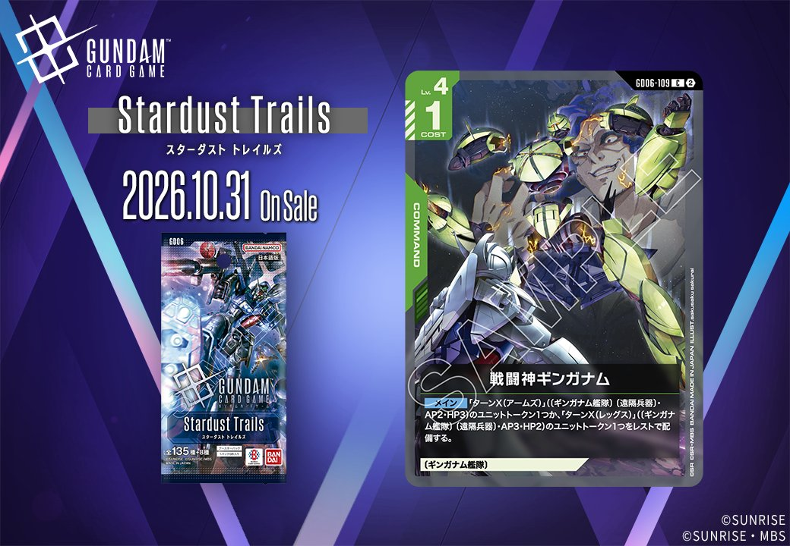
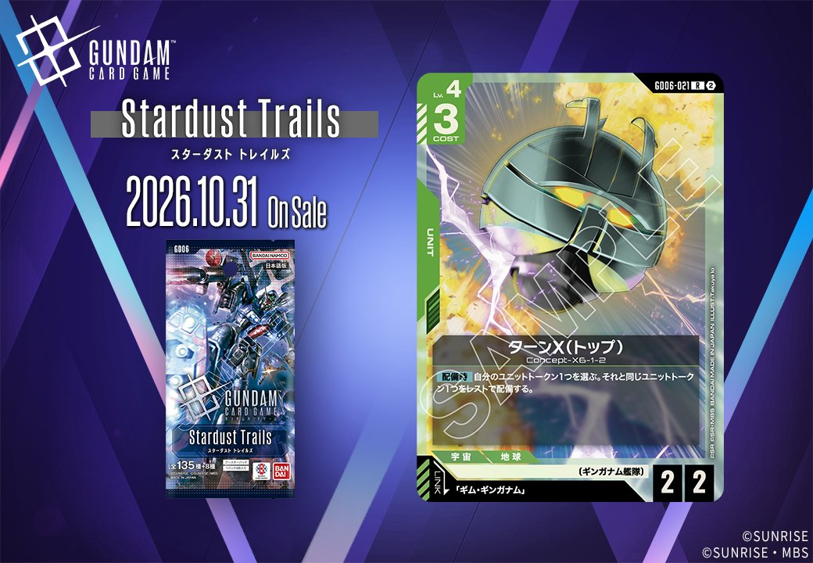

今回は、GD06「Stardust Trails」に収録される新規カード2枚をご紹介します。緑のCOMMAND「戦闘神ギンガナム」（GD06-109）と、同じく緑のUNIT「ターンX(トップ)」（GD06-021）という構成で、後者は「ギム・ギンガナム」をリンク条件に指定するUNITとなっています。カード名と収録情報から確認できる範囲で、それぞれの内容を整理していきます。

戦闘神ギンガナム (GD06-109)
| 色 | 緑 | タイプ | COMMAND |
| Lv | 4 | コスト | 1 |
効果: メイン 「ターンX(アームズ)」(〔ギンガナム艦隊〕〔遠隔兵器〕・AP2・HP3)のユニットトークン1つか、「ターンX(レッグス)」(〔ギンガナム艦隊〕〔遠隔兵器〕・AP3・HP2)のユニットトークン1つをレストで配備する。
コスト1のコマンドで、〔ギンガナム艦隊〕〔遠隔兵器〕を持つユニットトークンを1つレストで配備します。「ターンX(アームズ)」のAP2/HP3と「ターンX(レッグス)」のAP3/HP2から選べるため、盤面に応じて耐久寄りか打点寄りかを決められる点が実用的です。レストで出る仕様上、配備したターンにブロックやアタックへ回せず、次のターン以降の戦力として計算する形になります。ジオング(GD04-017)がトークン生成に【セット時】【破壊時】という条件を要するのに対し、こちらはメインタイミングで単独に頭数を増やせるのが差別化点です。リンクはなく、コマンド1枚で完結して動くカードと言えます。

ターンX(トップ) (GD06-021)
| 色 | 緑 | タイプ | UNIT |
| Lv | 4 | コスト | 3 |
| AP | 2 | HP | 2 |
| 特徴 | 〔ギンガナム艦隊〕 | ||
| リンク条件 | 「ギム・ギンガナム」 | ||
効果: 【配備時】自分のユニットトークン1つを選ぶ。それと同じユニットトークン1つをレストで配備する。
ターンX(トップ)は緑のLv.4・コスト3でAP2/HP2と、単体のステータスは控えめな部類です。価値は【配備時】にあり、自分のユニットトークン1つを選び、それと同じトークンをレストで追加配備できます。自分の場にトークンが存在することが前提のため、単独では効果が空振りになる点には注意が必要です。現環境では採用率11.2%のジオング(GD04-017)が【セット時・〔ニュータイプ〕のパイロット】で「有線式アーム」トークン2つを、【破壊時】で「ジオング(ヘッド)」トークン1つを供給するので、それらが場に残っている状況なら頭数を伸ばせます。レスト状態での配備なので即時のブロックには使えず、次のターンを見据えた運用になります。リンクは「ギム・ギンガナム」で、〔ギンガナム艦隊〕を軸にした構築の指針となる1枚です。


関連カード
-
 ザクⅡ(ST03-008)緑系デッキ内採用率23.3% (1613デッキ)
ザクⅡ(ST03-008)緑系デッキ内採用率23.3% (1613デッキ) -
 リック・ドム(GD01-030)緑系デッキ内採用率22.4% (1554デッキ)
リック・ドム(GD01-030)緑系デッキ内採用率22.4% (1554デッキ) -
 ザクⅡ（シャア・アズナブル機）(ST03-006)緑系デッキ内採用率14.2% (985デッキ)
ザクⅡ（シャア・アズナブル機）(ST03-006)緑系デッキ内採用率14.2% (985デッキ) -
 シャア・アズナブル(ST03-011)緑系デッキ内採用率13.3% (921デッキ)
シャア・アズナブル(ST03-011)緑系デッキ内採用率13.3% (921デッキ) -
 ジオング(GD04-017)緑系デッキ内採用率11.2% (779デッキ)
ジオング(GD04-017)緑系デッキ内採用率11.2% (779デッキ) -
 アスピーテ(GD06-124)NEW緑系 — 同色・共通特徴: ギンガナム艦隊（新カード）
アスピーテ(GD06-124)NEW緑系 — 同色・共通特徴: ギンガナム艦隊（新カード） -
 メリーベル・ガジット(GD06-087)NEW緑系 — 同色・共通特徴: ギンガナム艦隊（新カード）
メリーベル・ガジット(GD06-087)NEW緑系 — 同色・共通特徴: ギンガナム艦隊（新カード） -
 バンデット(メリーベル機)(GD06-022)NEW緑系 — 同色・共通特徴: ギンガナム艦隊（新カード）
バンデット(メリーベル機)(GD06-022)NEW緑系 — 同色・共通特徴: ギンガナム艦隊（新カード） -
 ギム・ギンガナム(GD06-085)NEW緑系 — 同色・共通特徴: ギンガナム艦隊（新カード）
ギム・ギンガナム(GD06-085)NEW緑系 — 同色・共通特徴: ギンガナム艦隊（新カード） -
 ターンX(GD06-019)NEW緑系 — 同色・共通特徴: ギンガナム艦隊（新カード）
ターンX(GD06-019)NEW緑系 — 同色・共通特徴: ギンガナム艦隊（新カード）